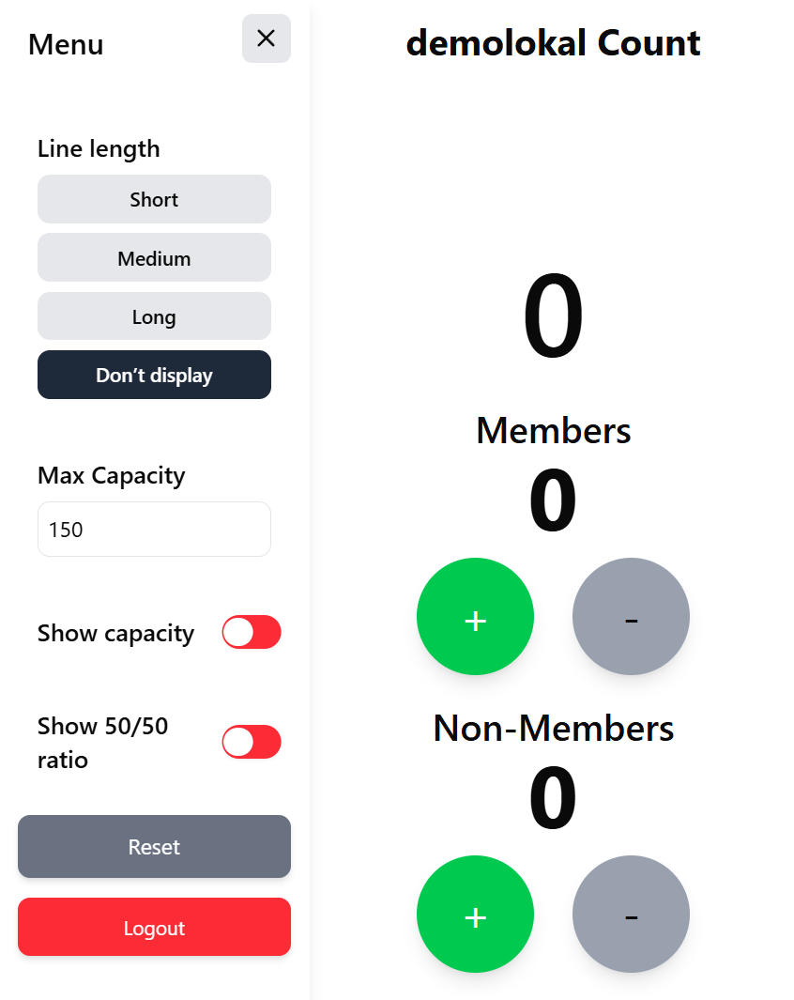

Projects
www.pubquery.se
-
I started working on pubquery.se in the beginning of 2023 with the aspiration to offer an easy way to find information about student pubs in Stockholm, through daily web scraping. Today pubquery.se is a complete platform for student events in Stockholm, with 20,000 visits per month and 30 participating student organizations.
The platform is built with a full-stack architecture comprising a Selenium-based web scraper, a PHP and JavaScript frontend, an Express.js backend, and a MySQL database. It also includes an admin panel developed with Next.js and a real-time door counter app built using React and Vite. All components of the system were developed solely by me.

Video From Image
-
A complete ML system designed to help users identify the specific YouTube video and timestamp that correspond to their uploaded image, powered by a convolutional autoencoder model.

Instagram Story Automation
-
I automated the repetitive process of posting a weeekly Instagram story with the events of the week on the chapters Instagram account. This was done by using the google calendar API to fetch the events, Renderform to create a custom image and an Instragram API to post the image. Finally I used Github Actions to schedule the script to run every week.
Zettle Retriever
-
I used Zettle's API to automatically gather all of the chapters transactions every week, count the number of beers sold, update this figure in a Suppabase database. This figure is then displayed on the chapters website.
Smart Contract & Oracle Implementations
-
As my Bachelor's thesis in collaboration with the Swedish Central Bank, I developed a smart contract and two oracles for a decentralized conditional purchase. The first oracle was designed to fetch data from an external API, while the second utilized ChainLink.